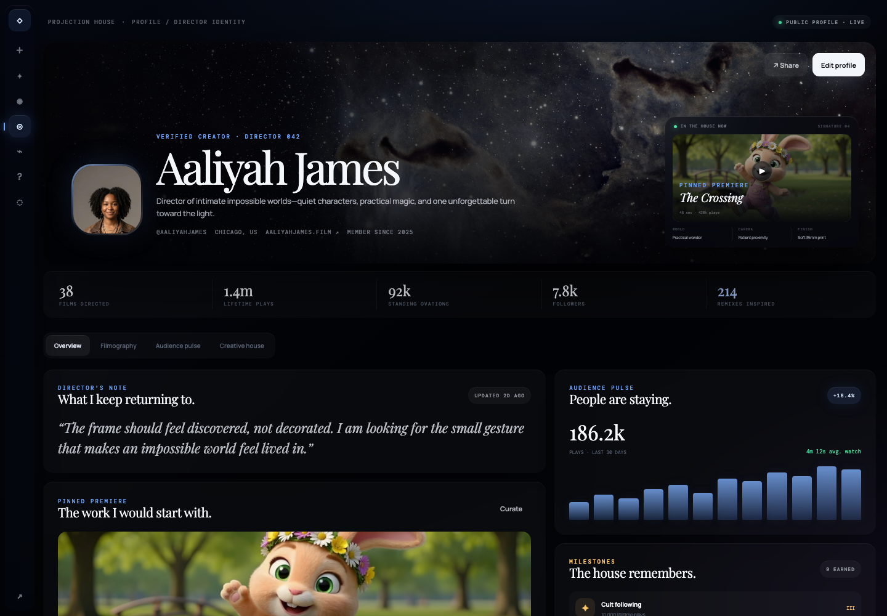
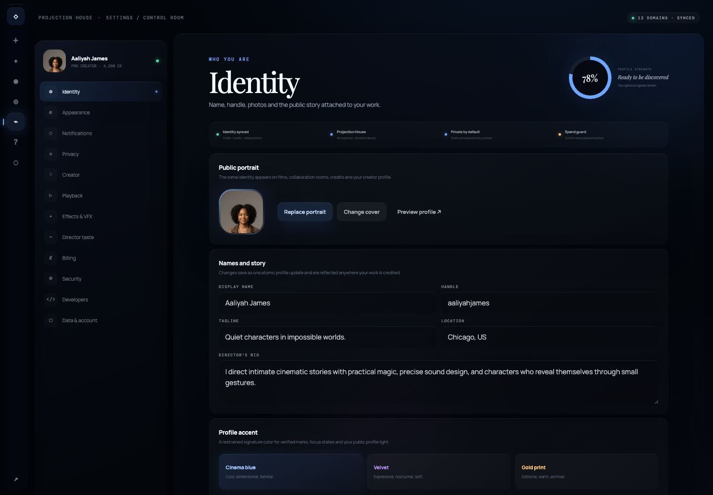
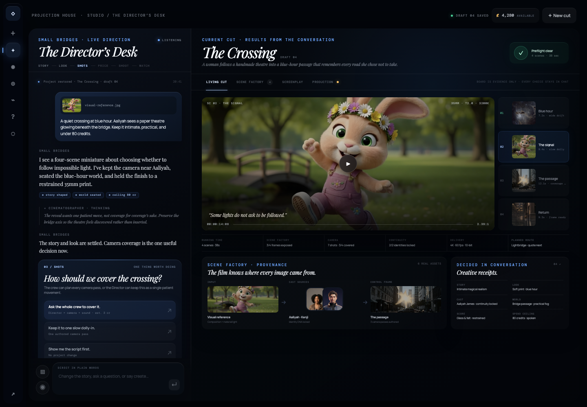
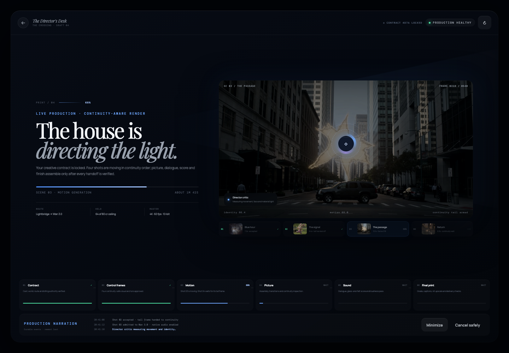
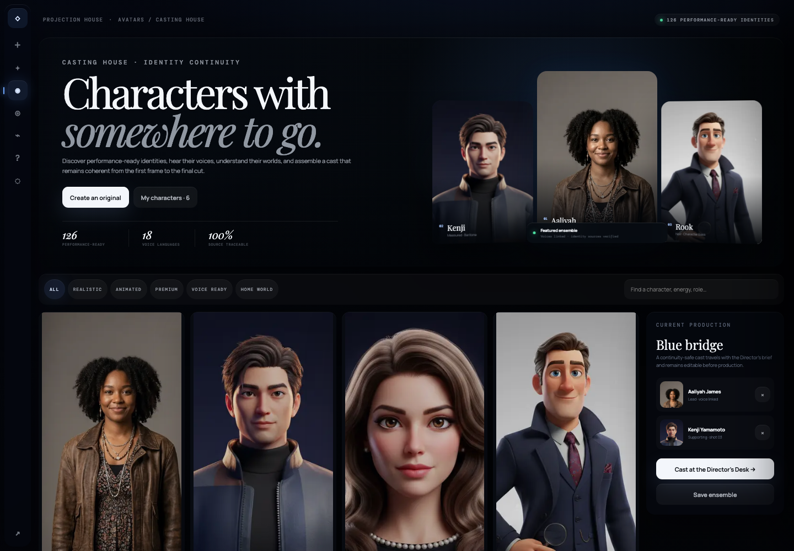
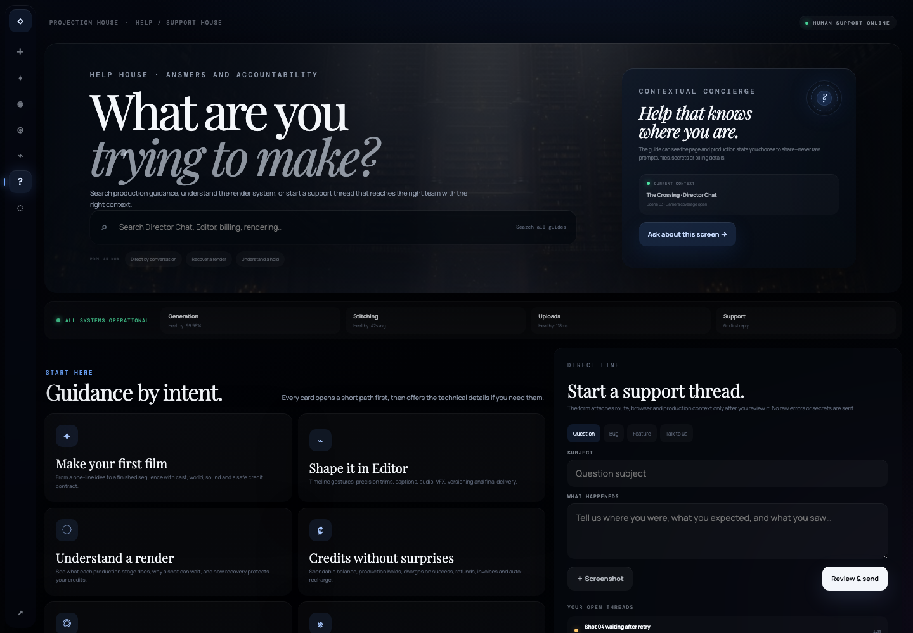

Identity
Profile

Small Bridges · Projection House · Review 02
Six comprehensive, interactive mocks rebuilt against the approved Projection House benchmark: cinematic imagery, editorial scale, layered glass, real product state and fewer generic boxes. Studio is now correctly represented by the Director’s Desk—conversation on the left, living film evidence on the right.
Identity

Control room

Conversational creation

System motion

Characters

Support

Full-product coverage
The remaining routes inherit an explicit surface family instead of becoming one-off redesigns. This keeps the campaign coherent and makes implementation testable.